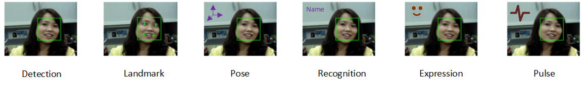

|
The SDK face tracking module provides a suite of the following face algorithms (see Figure 16):

Figure 16: Face Tracking Operations
| • | Face detection locates a face (or multiple faces) from an image or a video sequence, and returns the face location in a rectangle. You can use this feature to count how many faces are in the picture and find their general locations. |
| • | Landmark detection further identifies the feature points (eyes, mouth, etc.) for a given face rectangle. The eye location is of a particular interest for applications that change display perspectives based on where on the screen users are looking. Other feature points can be useful to create a face avatar or figure out the orientation of the head. |
| • | Pose detection estimates the face orientation where the user's face is looking at. |
| • | Expression detection calculates the scores for a few supported facial expressions such as eye-closed and eye-brow turning up. |
| • | Face recognition feature compares the current face with a set of reference pictures in the recognition database to determine the user's identification. |
| • | Pulse estimation tracks subtle change in face skin color over time and estimates the person's pulse rate. |
|